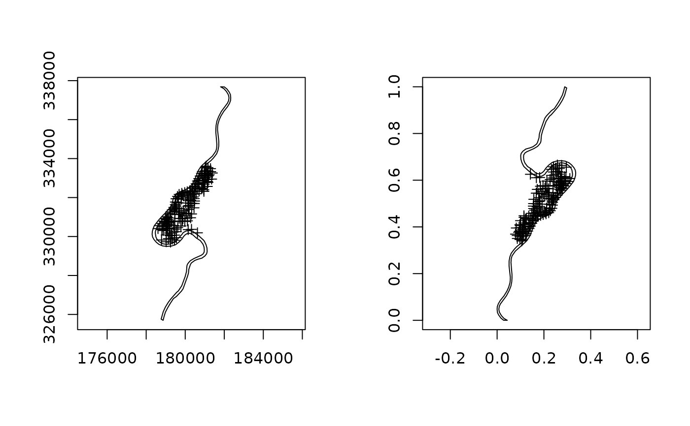
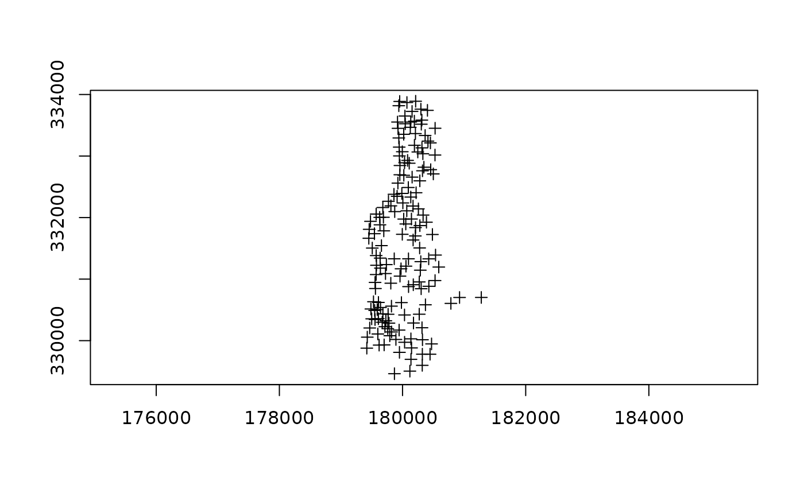

elide-methods.RdMethods for function elide to translate and disguise coordinate placing in the real world.
elide(obj, ...)
<!-- % (obj, bb=NULL, shift=c(0, 0), reflect=c(FALSE, FALSE), scale=NULL, flip=FALSE) -->elides object
elides object
elides object
elides object
elides object
elides object
object to be elided
other arguments:
if NULL, uses bounding box of object, otherwise the given bounding box
values to shift the coordinates of the input object; this is made ineffective by the scale argument
reverse coordinate axes
if NULL, coordinates not scaled; if TRUE, the longer dimension is scaled to lie within [0,1] and aspect maintained; if a scalar, the output range of [0,1] is multiplied by scale
translate coordinates on the main diagonal
default 0, rotate angle degrees clockwise around center
default NULL, if not NULL, the rotation center, numeric of length two
logical, default FALSE, if TRUE and scale TRUE, impose unit square bounding box (currently only points)
The methods return objects of the input class object with elided coordinates; the coordinate reference system is not set. Note that if the input coordinates or centroids are in the data slot data.frame of the input object, they should be removed before the use of these methods, otherwise they will betray the input positions.
Rotation code kindly contributed by Don MacQueen
data(meuse)
coordinates(meuse) <- c("x", "y")
proj4string(meuse) <- CRS("+init=epsg:28992")
data(meuse.riv)
river_polygon <- Polygons(list(Polygon(meuse.riv)), ID="meuse")
rivers <- SpatialPolygons(list(river_polygon))
proj4string(rivers) <- CRS("+init=epsg:28992")
rivers1 <- elide(rivers, reflect=c(TRUE, TRUE), scale=TRUE)
meuse1 <- elide(meuse, bb=bbox(rivers), reflect=c(TRUE, TRUE), scale=TRUE)
opar <- par(mfrow=c(1,2))
plot(rivers, axes=TRUE)
plot(meuse, add=TRUE)
plot(rivers1, axes=TRUE)
plot(meuse1, add=TRUE)

par(opar)
meuse1 <- elide(meuse, shift=c(10000, -10000))
bbox(meuse)
#> min max
#> x 178605 181390
#> y 329714 333611
bbox(meuse1)
#> min max
#> x 188605 191390
#> y 319714 323611
rivers1 <- elide(rivers, shift=c(10000, -10000))
bbox(rivers)
#> min max
#> x 178304.0 182331.5
#> y 325698.5 337684.8
bbox(rivers1)
#> min max
#> x 188304.0 192331.5
#> y 315698.5 327684.8
meuse1 <- elide(meuse, rotate=-30, center=apply(bbox(meuse), 1, mean))
bbox(meuse)
#> min max
#> x 178605 181390
#> y 329714 333611
bbox(meuse1)
#> min max
#> x 179419.8 181278.9
#> y 329462.8 333890.2
plot(meuse1, axes=TRUE)
